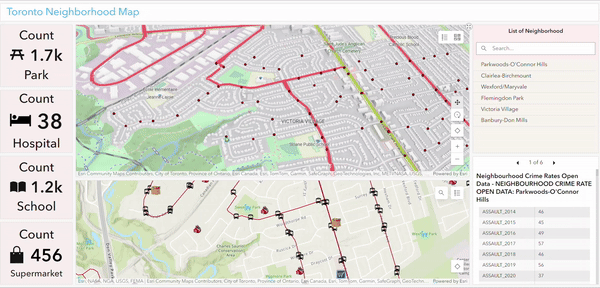
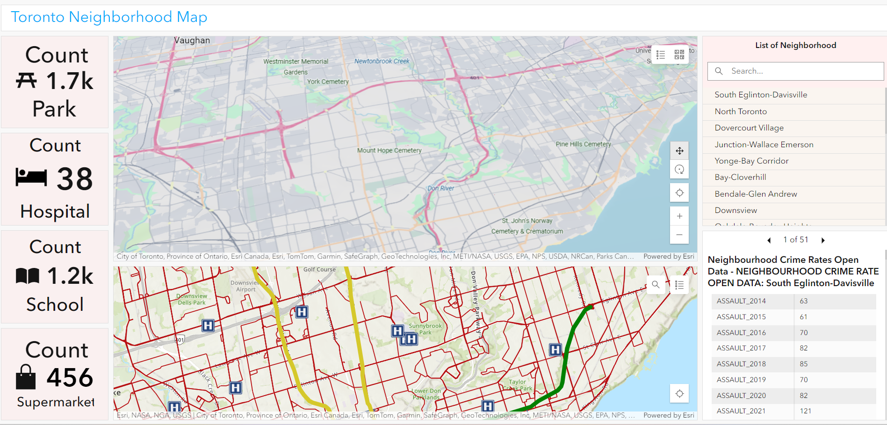
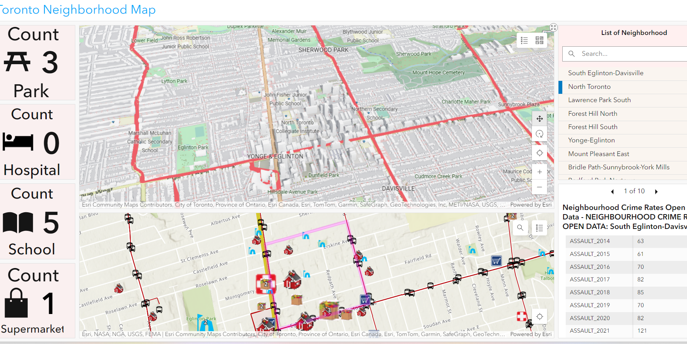
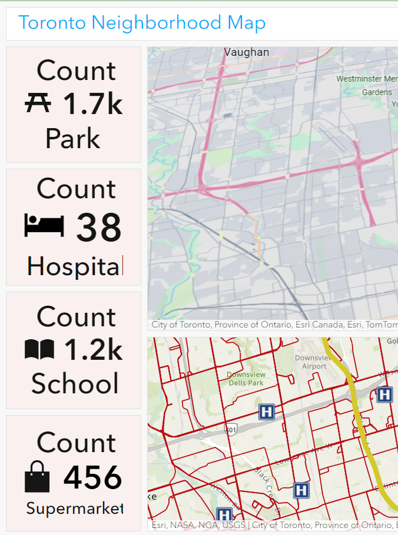

Solution 3 - Dashboard
- Home
- Dashboard
Link to Dashboard solution
Abstract
Using ArcGIS Dashboard for exploring Toronto Neighborhood data, public amenities, and Crime Statistics.
Main function 1: Statistics view by filtering neighborhood
When the neighborhood is selected or filtered at the list of the neighborhood, the neighborhood boundary is popped (in pink color) in the 2d layer and the scene layer is centered. The crime statistics table at the right corner displays all the crime data of that neighborhood and the count of amenities (park, hospital, school, and supermarkets) are displayed aesthetically at the right.
Initially, the count of the amenities and crime data are displayed for the whole of Toronto.
Main function 2: Displaying the data in a 2d web layer and 3d scene at once
The 2d layer and scene layer are linked. If we pan around or zoom the 2d layer the connectivity and the zooming functions can be seen in the scene layer as well. All the crime data are linked with the 2d layer. And the 2d layer is linked with the 3d layer.

Tips and Tricks to Work on Dashboard
- Visit the ArcGIS Dashboard official link and feel free to go through the official tutorials https://www.esri.com/en-us/arcgis/products/arcgis-dashboards/resources
- Watch the ESRI presentation https://www.youtube.com/watch?v=zrxYWzSvJ6E
Skill Learnt
- Create a Scene layer and add the data (especially the Rest link to the Scene layer. Work with the visibility setting in the scene layer so that displaying can be done easily.
- Connect the Rest link to the scene layer and Dashboard, connect the scene layer and ArcGIS online link to the Dashboard, and Dashboard to Experience Builder.
Future Possibility and things to improve
- The neighborhood boundary highlight that is pop-up just for a second in our dashboard can be made permanent which we need to figure out and improve.
- Add more charts and graphs to display the crime statistics easily
- Figure out the way to link all the indicators to the scene layer and link them to the table and charts
Some Dashboard Screenshots for dashboard learners
The above screenshot shows the initial count of the whole dashboard with the list of Neighborhoods and details of crime of all the neighborhoods. The count of amenities is displayed to the full extent of the Toronto.
The above screenshot shows the count of the selected dashboard with the list of Neighborhoods of screen extent and details of crime of the chosen neighborhood.
The above screenshot displays the error of the dashboard. The count data's font and letter size are increased and look weird when we open the dashboard. When we refresh the dashboard it will revert back to the proper extent set during the launch of the dashboard.